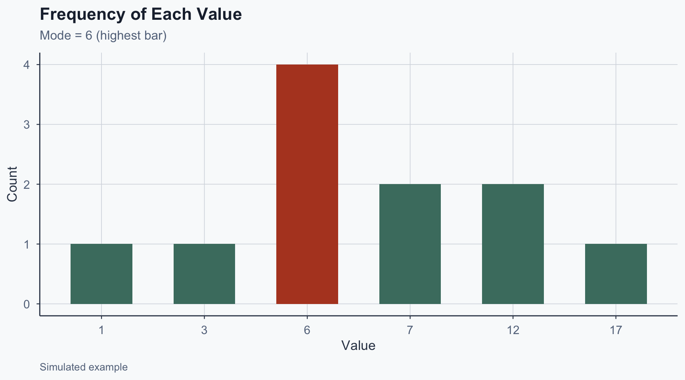
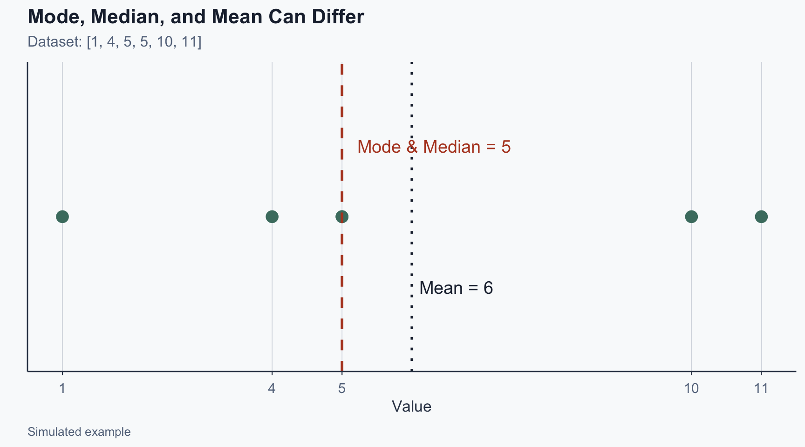
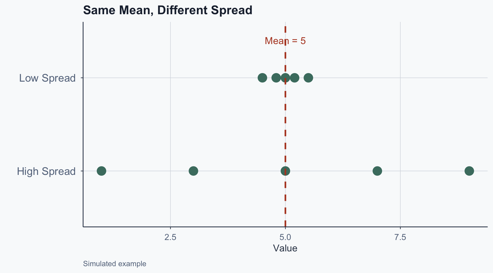

![]()
%%{init:{"flowchart":{"useMaxWidth":true,"nodeSpacing":50,"rankSpacing":50},"themeVariables":{"fontSize":"22px"},"width":1150,"height":650}}%%
flowchart LR
A[Raw Data] --> B[Descriptive<br/>Statistics]
B --> C[Identify<br/>Patterns]
C --> D[Formulate<br/>Hypotheses]
D --> E[Inferential<br/>Statistics]
Statistical Analysis
Lecture 3: Descriptive Statistics
Why Summarize Data?
Raw datasets are long and messy. We need summaries that are:
- Concise: easy to communicate
- Informative: capture what matters
- Comparable: across groups and time
Without summaries, we cannot test hypotheses or compare groups – the core of statistical inference
From Description to Inference
Two Ways to Summarize
Graphical summaries
- Bar charts, histograms, density plots, boxplots
Numerical summaries
- Central tendency: mode, median, mean
- Dispersion: range, variance, standard deviation
A good summary always reports both center and spread
Frequency Distributions
- Frequency table: counts of each value/category
- Let \(f_k\) = count for category \(k\), \(n\) = sample size
Relative frequency (proportion):
\[p_k = \frac{f_k}{n}\]
Measures of Central Tendency
Central Tendency
Describe the typical case in a dataset
- Mode: most frequent value
- Median: middle value (robust to outliers)
- Mean: arithmetic average (uses all values)
Which one you report depends on the shape of the data and the research question
Mode
- The most frequently occurring value
- Defined only by frequency, not distance
- May be absent or have multiple modes
\[[1, 3, 6, 6, 6, 6, 7, 7, 12, 12, 17]\]
The mode is 6 (occurs four times)
Visualizing the Mode

Figure 1
Median
- The middle value in an ordered dataset
- Requires observations to be ranked first
- Resistant to outliers – preferred for skewed data
If \(n\) is odd: \(\quad\text{median} = x_{(n+1)/2}\)
If \(n\) is even: \(\quad\text{median} = \frac{x_{n/2} + x_{(n/2)+1}}{2}\)
Median: Odd \(n\) Example
\[[1, 2, 2, \mathbf{3}, 4, 7, 9] \quad (n = 7)\]
\[\text{median} = x_{(7+1)/2} = x_4 = \mathbf{3}\]
Median: Even \(n\) Example
\[[7, 3, 1, 2, 5, 6] \quad\rightarrow\quad [1, 2, 3, 5, 6, 7] \quad (n = 6)\]
\[\text{median} = \frac{x_3 + x_4}{2} = \frac{3 + 5}{2} = \mathbf{4}\]
Mean
- The average of all values
- Uses all observations – sensitive to outliers
\[\bar{x} = \frac{1}{n}\sum_{i=1}^{n} x_i\]
Example: \([4, 1, 7]\)
\[\bar{x} = \frac{4 + 1 + 7}{3} = \frac{12}{3} = \mathbf{4}\]
When Does the Choice Matter?

Figure 2
Choosing the Right Measure
| Situation | Best measure | Why |
|---|---|---|
| Skewed income data | Median | Resistant to outliers |
| Symmetric exam scores | Mean | Uses all information |
| Categorical (party ID) | Mode | Only option |
| Small sample, outliers | Median | More stable |
Exercise: Central Tendency
\[[1, 4, 5, 5, 10, 11]\]
- Mode: 5 (most frequent)
- Median: \(\frac{x_3 + x_4}{2} = \frac{5+5}{2} = 5\)
- Mean: \((1+4+5+5+10+11)/6 = 36/6 = 6\)
Note: mean \(\neq\) median – the right tail pulls the mean up
Measures of Dispersion
Why Dispersion Matters
Two datasets can have the same mean but tell very different stories
- Country A: incomes of $49k, $50k, $51k (low spread)
- Country B: incomes of $10k, $50k, $90k (high spread)
Without measuring spread, we cannot assess uncertainty or test whether group differences are real
Visualizing Spread

Figure 3
Range
- Simplest measure: \(\text{Range} = Y_{\max} - Y_{\min}\)
- Uses only two values – very sensitive to outliers
Better measures use all observations: variance and standard deviation
Variance
Sample variance (denominator \(n - 1\)):
\[s^2 = \frac{\sum_{i=1}^{n}(Y_i - \bar{Y})^2}{n-1}\]
Population variance (denominator \(N\)):
\[\sigma^2 = \frac{\sum_{i=1}^{N}(Y_i - \mu)^2}{N}\]
Standard Deviation
- Square root of variance – same units as data
- Easier to interpret than variance
Sample: \(\quad s = \sqrt{\frac{\sum_{i=1}^{n}(Y_i - \bar{Y})^2}{n-1}}\)
Population: \(\quad \sigma = \sqrt{\frac{\sum_{i=1}^{N}(Y_i - \mu)^2}{N}}\)
Dispersion: Worked Example
\([3, 4, 7]\)
Range: \(7 - 3 = 4\) | Mean: \((3+4+7)/3 = 4.67\)
. . .
Variance:
\[s^2 = \frac{(3-4.67)^2 + (4-4.67)^2 + (7-4.67)^2}{2} = \frac{2.77 + 0.44 + 5.44}{2} = 4.33\]
. . .
Std Dev: \(s = \sqrt{4.33} = 2.08\)
Exercise: Dispersion
\([2, 4, 8]\) – Calculate range, mean, variance, std dev
Range: \(8 - 2 = 6\) | Mean: \((2+4+8)/3 = 4.67\)
. . .
Variance: \(s^2 = \frac{(2-4.67)^2 + (4-4.67)^2 + (8-4.67)^2}{2} = \frac{7.11 + 0.44 + 11.11}{2} = 9.33\)
. . .
Std Dev: \(s = \sqrt{9.33} = 3.05\)
Outliers: Bears at the Zoo
Ages of 4 bears: \([5, 4, 6, 39]\)
- Mean: \(54/4 = 13.5\) | Median: \((5+6)/2 = 5.5\)
- Std Dev: \(s = 17.02\)
The outlier (39) pulls the mean to 13.5 – more than double the median
A researcher reporting only “average bear age = 13.5 years” would mislead the reader
Sigma and Pi Notation
Why We Need Notation
The formulas for variance and standard deviation use summation
\[s^2 = \frac{\sum_{i=1}^{n}(Y_i - \bar{Y})^2}{n-1}\]
\(\sum\) (sigma) is shorthand for “add up a sequence”
Without it, writing formulas for \(n = 100\) or \(n = 1{,}000\) would be impractical
Sigma Notation
For \(\{X_1, X_2, X_3\}\):
\[X_1 + X_2 + X_3 = \sum_{i=1}^{3} X_i\]
- \(i\) = index (start at bottom, end at top)
- Expression after \(\sum\) = what to add
More examples:
- \(\sum_{i=2}^{3} X_i = X_2 + X_3\)
- \(\sum_{i=1}^{N} X_i = X_1 + X_2 + \cdots + X_N\)
Pi Notation
Multiplication uses \(\prod\) (Pi):
\[\prod_{i=1}^{3} X_i = X_1 \cdot X_2 \cdot X_3\]
\[\prod_{i=1}^{N} X_i = X_1 \cdot X_2 \cdots X_N\]
Properties of Sigma Notation
Constants factor out: \(\sum_{k=1}^{n} c \cdot a_k = c \sum_{k=1}^{n} a_k\)
Sums distribute: \(\sum_{k=1}^{n} (a_k + b_k) = \sum_{k=1}^{n} a_k + \sum_{k=1}^{n} b_k\)
. . .
Products do not: \(\sum_{k=1}^{n} (a_k \cdot b_k) \neq \sum_{k=1}^{n} a_k \cdot \sum_{k=1}^{n} b_k\)
Fractions do not: \(\sum_{k=1}^{n} \frac{a_k}{b_k} \neq \frac{\sum_{k=1}^{n} a_k}{\sum_{k=1}^{n} b_k}\)
Connecting Notation to Variance
The sample variance formula in full:
\[s^2 = \frac{(Y_1 - \bar{Y})^2 + (Y_2 - \bar{Y})^2 + \cdots + (Y_n - \bar{Y})^2}{n-1}\]
With sigma notation:
\[s^2 = \frac{\sum_{i=1}^{n}(Y_i - \bar{Y})^2}{n-1}\]
Every inferential formula (t-tests, regression, ANOVA) builds on this notation
Exercises: Notation
Exercise: Write in Sigma Notation
\(1 + 2 + 3 + 4 + 5\)
\[\sum_{n=1}^{5} n\]
\(1^3 + 2^3 + 3^3 + 4^3 + 5^3\)
\[\sum_{n=1}^{5} n^3\]
Exercise: Write in Sigma Notation
\(3 + 6 + 9 + \cdots + 60\)
\[\sum_{n=1}^{20} 3n\]
\(1 + \frac{1}{2} + \frac{1}{3} + \frac{1}{4}\)
\[\sum_{n=1}^{4} \frac{1}{n}\]
Exercise: Evaluate the Sum
\[\sum_{r=1}^{4} r^3 = 1 + 8 + 27 + 64 = \mathbf{100}\]
\[\sum_{n=2}^{5} n^2 = 4 + 9 + 16 + 25 = \mathbf{54}\]
\[\sum_{k=0}^{5} 2^k = 1+2+4+8+16+32 = \mathbf{63}\]
Conclusion
What We Learned
- Central tendency: mode, median, mean – each suited to different data shapes
- Dispersion: range, variance, standard deviation
- Always pair center with spread to avoid misleading summaries
- Sigma (\(\sum\)) notation is the language of statistical formulas
Looking ahead: these measures are the building blocks for hypothesis testing and regression analysis in upcoming lectures
Popescu (JCU) Statistical Analysis Lecture 3: Descriptive Statistics